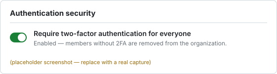

All members of the cla-org GitHub organization have two-factor
authentication (2FA) enabled. This was verified by querying the GitHub REST API
for members whose 2FA is disabled; the result was zero. Organization policy also
requires 2FA at the org level, so non-compliant members cannot remain in
the organization.
$ gh api "/orgs/cla-org/members?filter=2fa_disabled" --jq 'length'
0
$ gh api "/orgs/cla-org/members" --paginate --jq 'length' | paste -sd+ | bc
137137 members total, 0 without 2FA → 100% compliant.
| Login | Role | 2FA enabled |
|---|---|---|
| a-admin | admin | yes |
| b-engineer | member | yes |
| c-contractor | member | yes |
Organization → Settings → Authentication security, showing "Require two-factor authentication for everyone" enabled:
